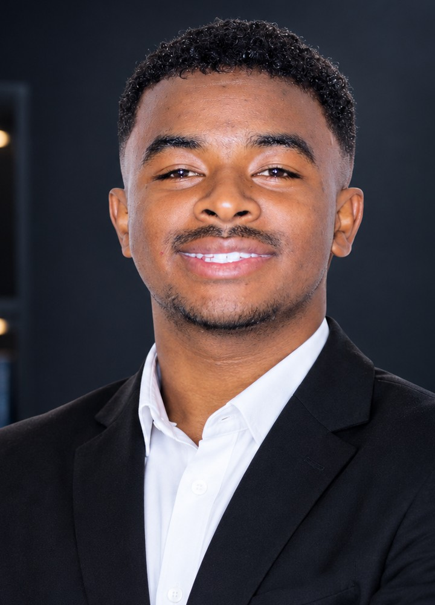

⌁
01 — FEATURED · UNESCO YOUTH HACKATHON 2026↗
Truth Checker
A real-time fact-checking tool for text, article links and images. It searches news, official and scientific sources, then presents a reliability score, explanation and references.
Building safer systems and smarter tools. Computer Science graduate and Telecommunications master’s student focused on cybersecurity, SOC analysis and network engineering.
I like understanding how systems work, where they can fail, and how thoughtful engineering can make them stronger.

I’m a Computer Science graduate and a master’s student in Telecommunications at the University of Itasy, building a foundation in networking alongside hands-on cybersecurity and software projects.
My interests span SOC operations, network administration, vulnerability analysis and AI assisted fact checking. I enjoy bringing these areas together through practical tools that solve clear problems.
Known for analytical thinking, attention to detail and a continuous-learning mindset, I’m looking for opportunities in cybersecurity, SOC, network engineering and secure IT systems.
Real projects from my GitHub: network automation, fact checking, IoT and defensive security research.
A real-time fact-checking tool for text, article links and images. It searches news, official and scientific sources, then presents a reliability score, explanation and references.
A Python application for network discovery, monitoring and administration, with a web dashboard, alerts and automated configuration workflows.
A responsive water-monitoring dashboard for pH, temperature, humidity and tank level, with ESP32 pump automation, MQTT connectivity and a simulation mode.
An educational, defensive simulator for studying how benign Python scripts mutate and how those changes affect detection. Designed for controlled lab use.
Master’s research exploring eBPF/XDP and an Isolation Forest model to detect and mitigate anomalous traffic at high speed.
A research prototype for detecting and mitigating APT behavior with temporal graph learning in an SDN lab. The repository documents that full Mininet/Ryu integration validation remains outstanding.
A Python cybersecurity project focused on ransomware cleaning and decryption, connected to my bachelor’s thesis work.
Browse the source code, setup notes and ongoing work across my public GitHub projects.
A growing path through computer science, telecoms and hands-on security work.
Developing a strong foundation in networking and telecommunications while pursuing hands-on security and software projects.
Focused on computer science fundamentals, practical software development and a thesis project on ransomware cleaning and decryption.
Training across cybersecurity, embedded systems, IT maintenance, computer networking and network administration through Orange Digital Center, TME Education and NirInfo.
A practical toolkit across networking, security, systems and software development.
TCP/IP, OSI, IP addressing, subnetting, VLAN, DHCP, DNS, NAT, static routing, MPLS fundamentals, router/switch configuration.
SOC fundamentals, security monitoring, network security, firewall, VPN, LAN hardening, IDS/IPS concepts, Wazuh, Wireshark, Suricata.
Windows, Windows Server, Linux (Ubuntu/Debian), VMware, VirtualBox, PuTTY and systems fundamentals.
Python, backend/API integration, Git/GitHub, software project development, LLM integration and AI assisted analysis workflows.
I’m open to opportunities in cybersecurity, SOC analysis, network engineering and secure IT systems. Tell me what you’re building or where your team needs support.
Send me an email ↗Education, experience, certifications and technical skills in one document.
Welcome to Fabio’s portfolio terminal.
Type help to see available commands.